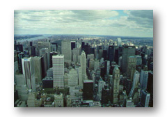
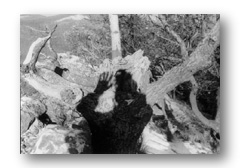
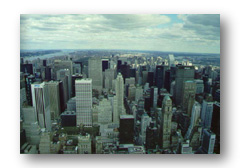
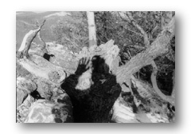
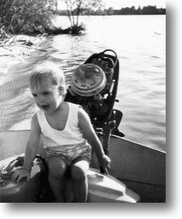

|
||
|  |  |
 |
|
2003.12.xx. | Álláskeresés: 1. Beke Lajos Kereskedelmi és Hitelbank Rt. 2. Aloha 2000 3. QualySoft 4. bpc (businessprocessconsulting) 5. TATA (TATA CONSULTANCY SERVICES) 6. SoDeCS Kft. 7. grafton 2004.01.0x. | Hajni cégautót kapott. 2003.11.23. | Autót vettünk II. A mostani szerencsés egy 1999-es Ford Ka lett. 2003.11.20. | Találkoztam SPÁNN Gáborral. 2003.11.05. | Anna két éves. Hihetetlen. 2003.10.30. | Megérkezett a Timex USB Data Link órám. 2003.10.29. | Engem is váratlanul ért a hír: "Munkaviszonya megszünésének oka, hogy átszervezés következtében az Ön által betöltött önállõ munkakör megszûnik mivel tevékenységét kiszervezzük és azt a szolgáltatótól szerezzük be a jövõben." Schneider not forever... Azért ideírom a nevedet: Krzysztof ZYLINSKI, hátha kapsz pár levelet és hogy miért? azt elég ha én/mi tudom/juk... 2003.10.23. | Izlandon jártunk Pereccel. Majd egyszer mesélünk... 2003.03.14. | A dolgok rendezõdni látszanak körülöttem. Nem úgy a világban... Várom az elkövetkezõ 20, 10, 5 évet!!! 2003.01.xx. | Volt egy kis idõm, hogy elõvegyem a FleXoft dolgot. Itt az eredménye: 2002.12.xx. | Annyira szétesõben vannak a kapcsolataim, hogy azon kezdtem gondolkodni, írok egy fikázó levelet mindenkinek... Erre szépen lassan mindenki bejelentkezett legalább egy telefon, e-mail vagy SMS erejéig: Perec, Vihari, Csizma, Jux, Bõdi kolléga, Bori, ... 2002.11.05. | Anna egy éves. Ezt is megértük. Nem volt semmi ez az év. 2002.08.2x. | Elköltöztünk egy szép, új, nagyobb lakásba. 2002.02.27. | Autót vettünk. A szerencsés nyertes egy 1995-ös Peugeot 405 GLD kombi lett. 2002.02.01. | www.fleischmann.hu, gyorgy.fleischmann.hu, anna.fleischmann.hu (Köszönet TÓTH Péternek a bejegyzésekért!!!) 2001.11.05. | Megszületett a kislányom Anna. 2001.05.02. | Új munkahelyre költöztem/Moved to a new workplace |
|
||
|  | |
 |
|  | "Öregedvén az ember, lemond az egykori ifjonc vágyairól. Némelyekrõl, persze, kénytelen-kelletlen, mert jól tudja, már nem tudna helytállni. Ez a lemondás a bölcsesség körébe tartozik. Így születik a bölcs öregember. De van, amirõl éppen hogy nem kellene lemondania, sõt, bizonygathatná: Ennek most jött el az ideje öreg korodra. Élj vele! S ha nem él vele, akkor az fogyatékoság. De minõ öröm, minõ szerencse: az öreg ember már nem szégyelli fogyatékosságait. Vállat von, és bevallja. Így kovácsol a fogyatékosságból erényt. Akkor már mondom is: Nem szeretek utazni." (Lázár Ervin: Európa - Aggófû koszorúval)
And Jules said, "Ezekiel twenty-five seventeen: `The path of the righteous man is beset on all sides by the inequities of the selfish and the tyranny of evil men. Blessed is he who in the name of charity and goodwill, shepherds the weak through the valley of darkness, for he is truly his brother's keeper. And I will strike down upon thee with great vengeance and furious anger, those who attempt to poison and destroy my brother. And you will know my name is the Lord when I lay my vengeance upon you!'" And the gun said bang-bang-bang-bang... And then...there was nothing but silence... And there was no Brett anymore... (Quentin Tarantino: Pulp Fiction) |
[ Fotózás | Napfogyatkozás | Budapest ] [ Memorable Quotes from... ] [ Receptek ]
[ sPion | PhotoPal | DpBank | PortGet ] [ iPAQ ] [ Timex USB Data Link ]
[ LiNUX | LCD project ] [ NT ] [ Lotus Notes ]
[ HTMLs > NEWS00 | NEWS01 | Book ] [ JavaScripts > PhotoBrowser | SzóVegyKonyha ] [ MyWAP ]
[ Universal Desktop Project > MyBookmarks Everywhere CGI R2 | MyMails | MyFiles | RSync ]
[ SiteManagement project ]
[ Web Camera project ]
[ BSOD(Blue Screen of Death) T-Shirt project ]
[ HRZS(Hit, remény, zsûlölet) Archívum ]
[ .mp3s ]
| Aki szereti a régi diafilmeket: | [ Képek az Interkozmosz történetébõl ] |
| [ Hauff: A kis Mukk története ] | |
| Barátok, ismerõsök lapjai: | ZSoós |
| Kandura | 24 | |
| Ern0 | |
| Grin | |
| Ego |
[ Dedicated to Amy FULLER only! ]
[ Dedicated to SZÁNTÓ-BOCSI Zsolt only! 1 | 2]
[ Dedicated to Varga Zsolti only! ]
 |
|
Comments & remarks:
· © by Gyurci/Flex/FleXoft
· Last revised: 2002 Januar 10.;
· Gyurci/Flex/FleXoft is registered trademark;
· © by FLEISCHMANN György;
· since December 1, 1997.  people have accessed this page (including you).
people have accessed this page (including you).